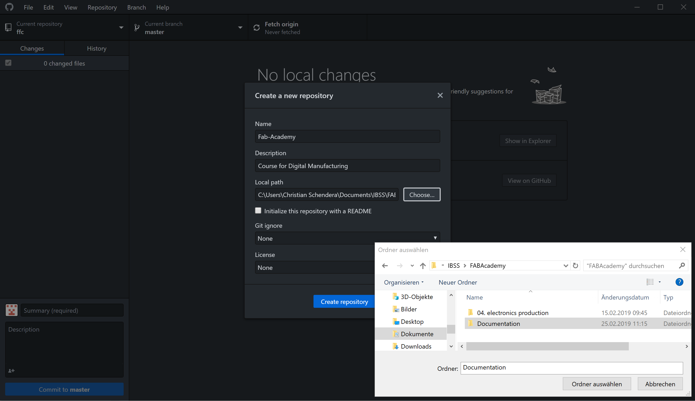
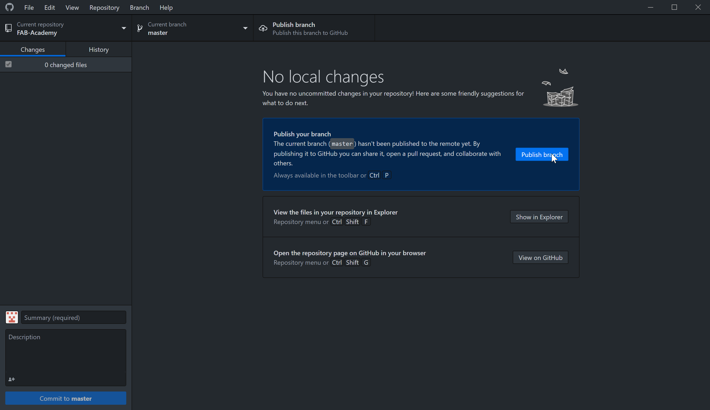
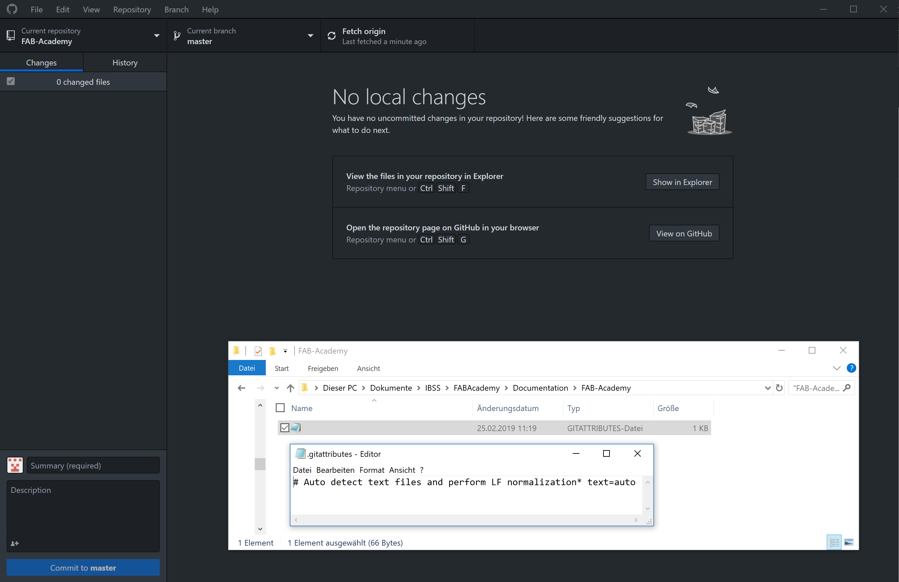
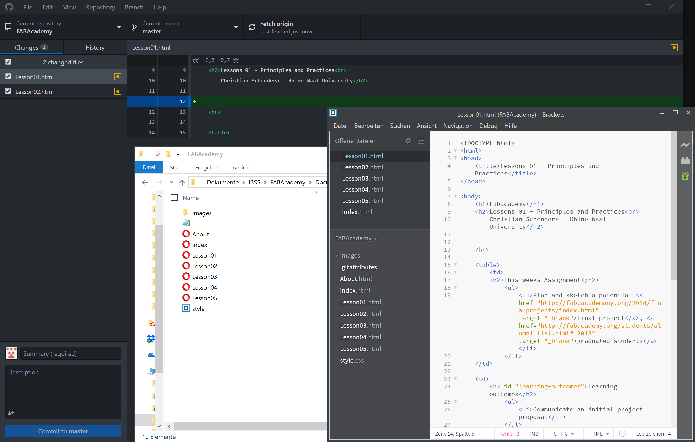
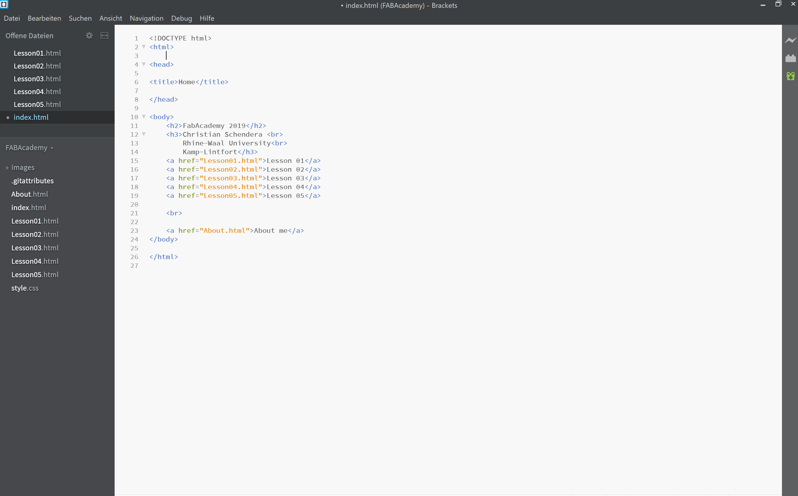

This weeks Assignment
|
Learning outcomes
|
Have you?
|
With focused visual tools and preprocessor support, Brackets is a modern text editor that makes it easy to design in the browser.
GitHub is a web-based hosting service for version control using Git. It is mostly used for computer code. To put your project up on GitHub, you'll need to create a repository for it to live in. You can store a variety of projects in GitHub repositories, including open source projects. With open source projects, you can share code to make better, more reliable software.
| 
Open your GitHub Desktop Program instead of the Web version. This provides you an automatical upload of your files in your repository.
But first things, first! |

press Publish branch and an automatically developed text file appears in your repository.
see next image --> |
 This command autodetects all new files and changes in files within your documentation folder |
|
Now, everytime when you have any changes in your local files, you Github Desktop Application detects it and asks you to commit your changes to master.
you have to type in a summary of these changes |
 Here you see, that GitHub autodetects everytime I have some changes in one of my editor files. |  To write text in Brackets you have to follow a few HTML rules. Always type in your Declaration like Head, Body, and so on. For specific tags I mostly use W3schools.com |